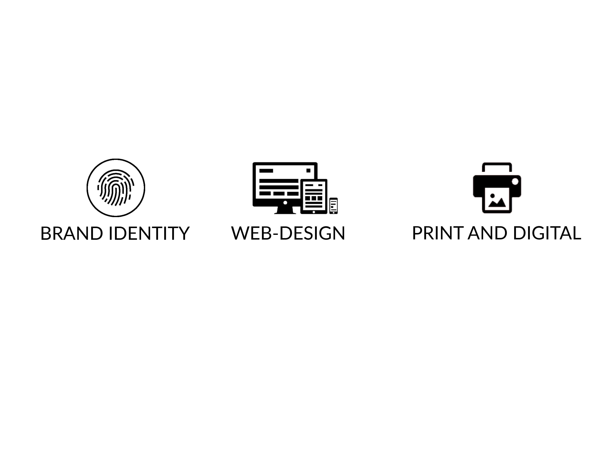

About
AJMAX Design Studios is a full-improvement self reliant innovative place of work. We go up towards marking and advertising challenges via a media-freethinker technique, and pleasure ourselves on growing creative preparations. In an industry that is advancing speedily, typical hypothesis is inadequate. We should will to make intriguing, connecting with manufacturer encounters. AJMAX Design Studios is geared up with the training, belongings, and potential anticipated to fabricate marks on this most of the time altering interactive digital design and media scene.
SERVICES PROVIDED
